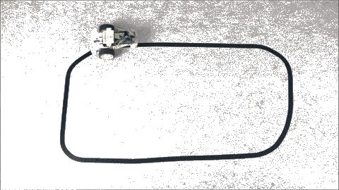
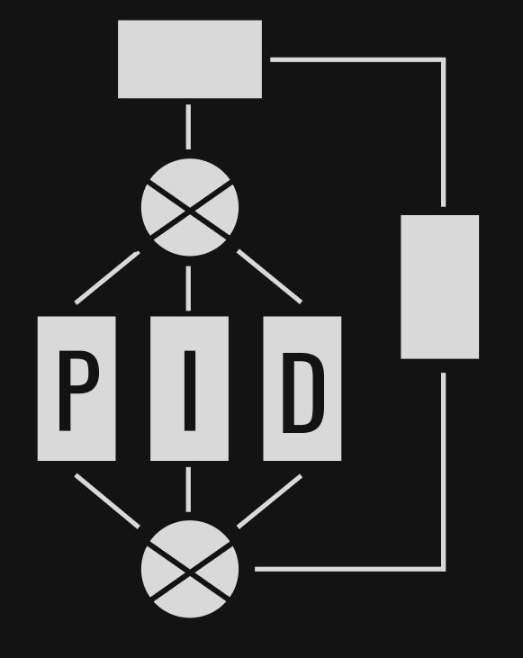
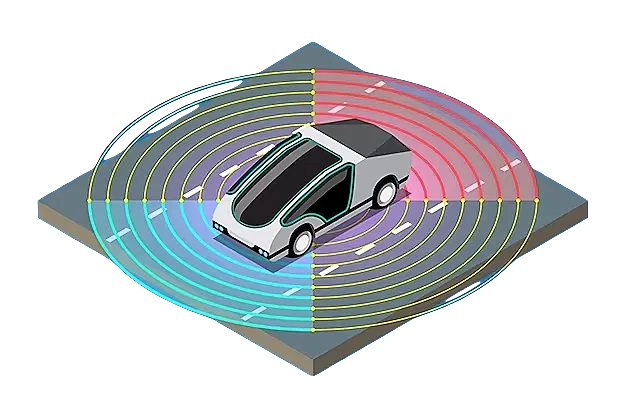
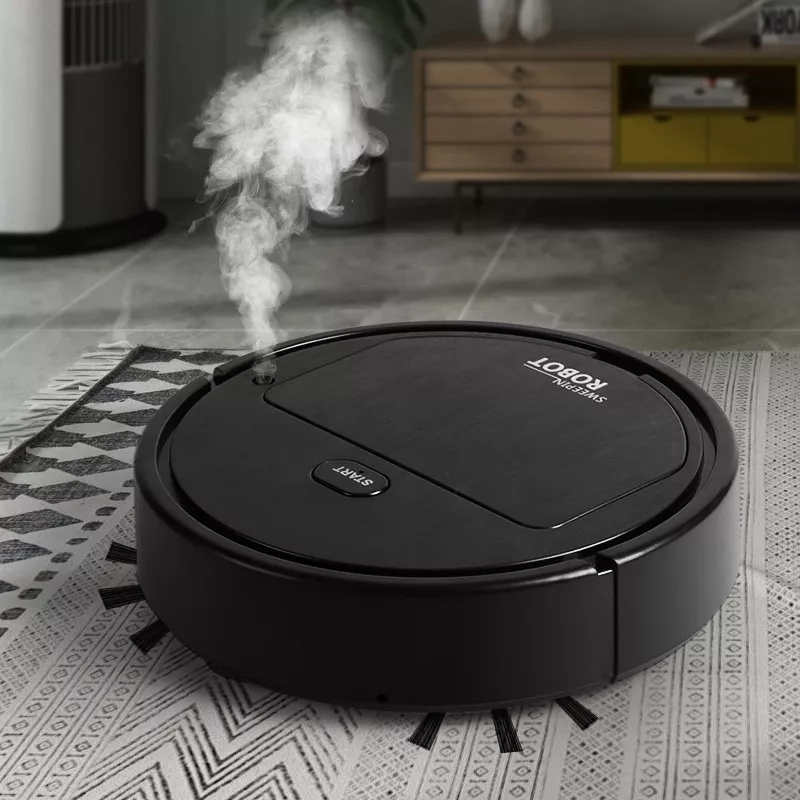
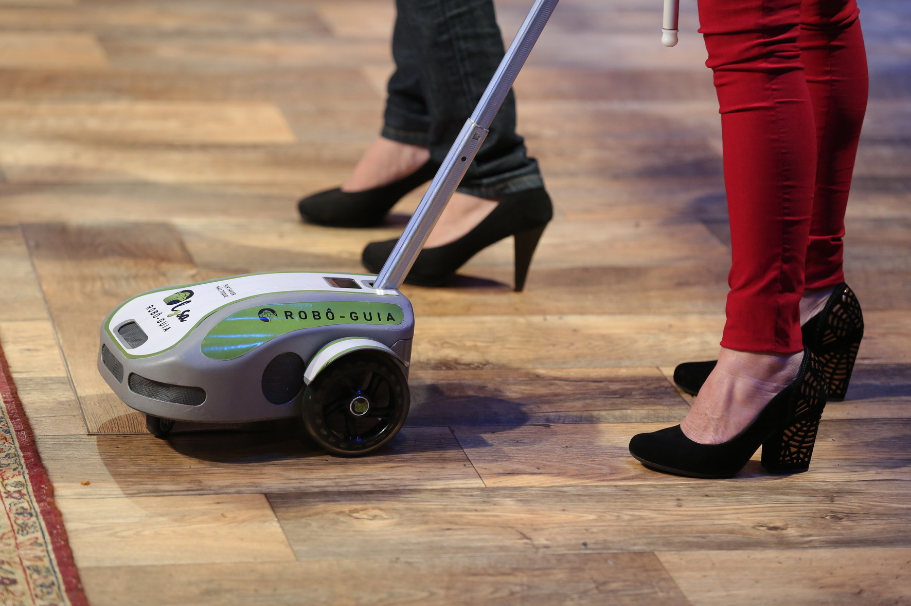

Conceito
O seguidor de linha é um dispositivo eletrônico que, utilizando sensores e microcontroladores, é capaz de detectar uma linha e seguir seu trajeto de forma autônoma. Embora possa parecer um sistema simples, comumente utilizado em competições de robótica, seu princípio de orientação e contole é amplamente utilizado em aparelhos e sistemas que utilizamos em nosso dia a dia. Dentre suas aplicações, podemos citar desde robôs para limpeza doméstica, robôs autônomos nas áreas de armazenamento e logística, controle de velocidade do piloto automático de um carro e até direção automática em carros inteligentes atualmente estudados por empresas como Tesla e Google.


PID
O seguidor de linha é um dispositivo eletrônico que utiliza sensores e microcontroladores para detectar uma linha e seguir seu trajeto de forma autônoma. Apesar de ser um sistema aparentemente simples, muito utilizado em competições de robótica, seu princípio de orientação e controle é amplamente aplicado em dispositivos e sistemas presentes em nosso cotidiano. Dentre suas diversas aplicações, podemos citar robôs para limpeza doméstica, robôs autônomos em áreas de armazenamento e logística, controle de velocidade do piloto automático em carros e até mesmo direção automática em veículos inteligentes, que atualmente são objeto de estudo de empresas como Tesla e Google.
Indústria
A intralogística em uma fábrica, tradicionalmente realizada por meio de empilhadeiras, guindastes ou pontes-rolantes, está aos poucos sendo otimizada com robôs móveis automatizados (AMR). Esses robôs seguidores de linha podem oferecer o máximo de eficácia no transporte de produtos e materiais dentro de uma fábrica. Dependendo do algoritmo e dos sensores utilizados, esses robôs são capazes de seguir um trajeto pré-determinado, desviar de obstáculos e até mesmo traçar novas rotas alternativas caso seu percurso esteja bloqueado. Com esses robôs, a intralogística torna-se mais ágil, eficiente e segura, além de permitir uma melhor utilização do espaço físico da fábrica.


Transporte
De acordo com especialistas no assunto, ainda levará alguns anos para vermos carros sem motorista andando pelas ruas, mas em ambientes restritos a realidade já está mudando. Na Alemanha, a Mercedes-Benz e a Bosch receberam a aprovação da Autoridade Federal de Transporte Motorizado da Alemanha (KBA) para o uso comercial de um sistema de estacionamento totalmente autônomo no aeroporto de Stuttgart. Todo o processo é possível graças à interação entre a infraestrutura inteligente fornecida pela Bosch, instalada no parque de estacionamento, e a tecnologia da Mercedes-Benz. Segundo as empresas, os sensores da Bosch na garagem monitoram o corredor e os arredores, fornecendo as informações necessárias para guiar o veículo. A tecnologia do veículo converte as informações que recebe da infraestrutura em manobras efetivas. Dessa forma, os veículos podem até mesmo subir e descer rampas entre os andares do estacionamento. Se os sensores de infraestrutura detectarem um obstáculo, o veículo freia e para completamente com segurança. Somente quando a rota estiver livre, ele continua seu caminho. Embora ainda haja um longo caminho a percorrer até que essa tecnologia se torne comum nas ruas, é um grande avanço que pode trazer muitos benefícios, como maior segurança no trânsito e redução de congestionamentos. A parceria entre a Mercedes-Benz e a Bosch é um excelente exemplo de como a colaboração entre empresas pode acelerar a implementação de tecnologias disruptivas.
Domicílio
Embora as opções ainda sejam limitadas, não há dúvida de que os robôs aspiradores de pó são uma verdadeira "mão na roda". Desde meados de 2020, eles têm sido o sonho de consumo de muitas donas de casa. Orientados por sensores de obstáculos, os modelos mais básicos possuem um modo de limpeza automático que alterna entre cantos, espiral, linha reta e zigue-zague. Já os modelos avançados podem vir equipados com sistemas de mapeamento avançado e até câmeras para "enxergar" o ambiente, identificar objetos em seu caminho e saber onde já passaram. Mais recentemente, temos visto também robôs autônomos para a limpeza de vidraças. Em modo autônomo, esses robôs são capazes de definir sua rota, identificar locais onde já passaram e evitar colisões com as bordas. É uma tecnologia muito interessante que está mudando a forma como lidamos com a limpeza da casa, tornando-a mais eficiente e conveniente.


Acessibilidade
Os indivíduos com deficiência visual têm à sua disposição diversos sistemas de locomoção que interagem e auxiliam nas suas atividades diárias, incluindo a bengala, o cão-guia e alguns sistemas de reconhecimento de voz. No entanto, há uma mudança em curso. A startup brasileira Vixsystem criou um cão-guia robótico chamado Lysa, que pode aprimorar a experiência dessas pessoas. Lysa é um robô com tecnologia de "scanner" que analisa o ambiente e entende como se locomover por ele. Os pontos de interesse daquele ambiente são previamente cadastrados em um aplicativo que, acoplado ao robô, permite que o usuário escolha para onde ir. O robô indica as opções disponíveis e, após a escolha do usuário, segue em frente, desviando de obstáculos detectados pelos seus sensores frontais, laterais e superiores, garantindo a segurança do usuário ao longo do percurso. Em resumo, Lysa é uma tecnologia inovadora que pode aprimorar significativamente a qualidade de vida das pessoas com deficiência visual, permitindo que elas se movam com segurança e autonomia em ambientes desconhecidos.